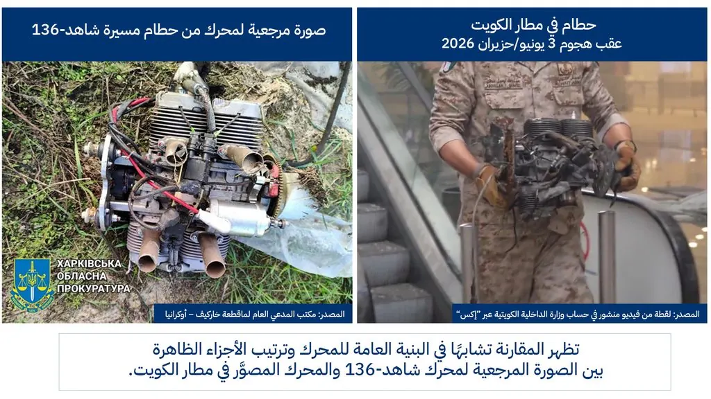

قُتل مقيم هندي وأصيب 63 شخصًا في 3 حزيران/يونيو 2026 إثر استهداف مبنى الركاب الأول في مطار الكويت الدولي، بعد نحو 48 ساعة من إعادة تشغيله، في هجوم تنسبه الكويت إلى إيران.
لم يكن ذلك أول استهداف للمطار. ففي 28 شباط/فبراير 2026، شنت[بالإنجليزية] الولايات المتحدة وإسرائيل ضربات على إيران، وردت طهران بهجمات على إسرائيل ودول خليجية. وفي اليوم نفسه، أصابت مسيّرة مبنى الركاب الأول وأوقعت إصابات وأضرارًا مادية، قبل إصلاحه وإعادة تشغيله في 1 حزيران/يونيو.
تكشف حادثة المطار مشكلة أوسع رافقت دول الخليج خلال الحرب: يمكن توثيق وقوع الضرر في كثير من الحالات، بينما يبقى إسناد المسؤولية أكثر تعقيدًا. ويفحص التحقيق هذا التفاوت في 49 حادثة ضرر مدني، بالتوازي مع تحليل 172 هجومًا على بنى تحتية غير عسكرية لرصد تغير جغرافيا الاستهداف.
نشرت الإدارة العامة للطيران المدني تسجيلات تظهر جسمًا طائرًا يرتطم بمبنى الركاب وينفجر. وقال المتحدث باسم وزارة الدفاع الكويتية، العقيد الركن سعود عبدالعزيز العطوان، إن مسيّرات معادية استهدفت المبنى. وأعلنت وزارة الصحة إصابة 63 شخصًا، بينهم سبع حالات خضعت لعمليات جراحية عاجلة.
وقالت وزارة الدفاع الكويتية إن قواتها اعترضت 13 صاروخًا باليستيًا فوق مناطق سكنية، ما أدى إلى سقوط شظايا، وتعاملت مع 17 طائرة مسيّرة. وأعلنت القيادة المركزية الأمريكية [بالإنجليزية] اعتراض مسيّرات إيرانية قالت إنها حاولت استهداف قوات أمريكية في الكويت. وتثبت هذه البيانات وقوع عمليات اعتراض، لكنها لا تثبت أن تلك الاعتراضات سببت الأضرار التي لحقت بمبنى الركاب.
لاحقًا، نفى المتحدث باسم الحرس الثوري الإيراني حسين محبّي استهداف القوة الجوفضائية التابعة للحرس الثوري مبنى الركاب، وقال إن الضرر نجم عن خطأ في منظومة باتريوت الأمريكية بعد فشلها في اعتراض صواريخ إيرانية. وفي المقابل، قالت القيادة المركزية الأمريكية [بالإنجليزية] إن هذه الرواية غير صحيحة وإن مسيّرات إيرانية استهدفت المطار المدني عمدًا.
وبعد مراجعة تسجيلات استهداف المطار، يرجح التحقيق أن الجسم الذي أصاب مبنى الركاب ينتمي إلى سلسلة مسيّرات شاهد-136 (Shahed-136). ويظل هذا ترجيحًا بصريًا لطراز المسيّرة، ولا يحدد الجهة التي أطلقتها.
الضرر أوضح من المسؤولية
بنى التحقيق قاعدة من 49 حادثة ضرر مدني وثقتها منظمة إيروورز (Airwars) [بالإنجليزية] في دول الخليج الست بين 28 شباط/فبراير و12 تموز/يوليو. وتعتمد المنظمة على المصادر المفتوحة لتوثيق أضرار المدنيين؛ لذلك لا تمثل الحالات جميع الهجمات، بل ما وثقت فيه وقوع ضرر مدني.
شملت القاعدة جميع حوادث الضرر المدني التي وثقتها إيروورز في دول الخليج الست، من دون تصفية بحسب الجهة المنسوب إليها الهجوم. وظهرت القوات الإيرانية في جميع الحالات ضمن الأطراف التي نسبت المصادر الضربة إليها أو احتملت ارتباطها بها. وعند تقديم الضحايا كنطاق، اعتمد التحقيق الحد الأدنى؛ فبلغت الحصيلة 23 قتيلًا و258 مصابًا، أي 281 قتيلًا ومصابًا على الأقل.
تصنف إيروورز 31 من أصل 49 حالة بأنها ضربات متنازعًا على إسنادها، أي نحو 63% من الحالات. وتضم هذه الحوادث 13 قتيلًا و180 مصابًا، أو 193 من أصل 281 قتيلًا ومصابًا سجلهم التحقيق. وفي المقابل، صنفت المنظمة 12 حادثة ضربات مرجحة، وخمس حالات ادعاءات قائمة على مصدر واحد، وحادثة واحدة ضربة معلنة.
تفصل إيروورز بين تقييمين: الأول يقيس مدى اتفاق المصادر على وقوع الضرر المدني، والثاني يقيس اتفاقها على الطرف المسؤول عن الضربة. وفي حوادث اعتراض المقذوفات، قد يكون الصاروخ أو المسيّرة الأصلية معروفًا، بينما يصعب تحديد ما إذا كان الضرر نتج عنه مباشرة أم عن اعتراضه أو سقوط حطامه.
ومن بين 31 حادثة متنازعًا على إسنادها، حصلت 24 على تقييم "معقول" من إيروورز بشأن وقوع الضرر المدني، وسجلت 170 قتيلًا ومصابًا. ويعني ذلك أن عدم اليقين في جزء كبير من الحالات يتعلق بالمسؤولية عن الضرر، لا بوقوعه؛ فقد يكون الضرر موثقًا بينما تبقى الجهة المسؤولة محل نزاع.
ولا تعد صعوبة الإسناد جديدة. ففي هجوم بقيق وخريص عام 2019، أعلن الحوثيون مسؤوليتهم، بينما قالت السعودية إن الهجوم لم ينطلق من اليمن، واتهمت واشنطن إيران التي نفت ذلك. ولم تتمكن الأمم المتحدة من التحقق آنذاك بصورة مستقلة من منشأ الأسلحة، قبل أن يخلص تقييم لاحق إلى أن أجزاء فحصتها كانت إيرانية المنشأ.
281 قتيلًا ومصابًا على الأقل
سجلت الإمارات 19 حادثة، وهو العدد الأكبر في قاعدة التحقيق، لكنها خلفت عشرة قتلى و50 مصابًا. أما الكويت فسجلت ثماني حوادث فقط، لكنها جاءت في مقدمة الدول من حيث حجم الضرر البشري، بقتيلين و95 مصابًا.
وتفسر حادثة مطار الكويت جزءًا كبيرًا من النتيجة؛ فالقتيل والـ 63 مصابًا يمثلون نحو 23% من حصيلة الحالات الـ 49، و66% من حصيلة الكويت. ومن دون الحادثة، تنخفض حصيلة الكويت من 97 إلى 33 قتيلًا ومصابًا. ولا تسمح البيانات بوصف الـ 281 جميعًا بأنهم ضحايا مباشرين لهجمات إيرانية.
منشآت الطاقة والنقل الأكثر استهدافًا
نشر مشروع بيانات مواقع وأحداث النزاعات المسلحة (ACLED) [بالإنجليزية] في 4 آب/أغسطس 2026 تحليلًا وثق ما لا يقل عن 172 هجومًا نفذتها إيران أو جماعات تدعمها في العراق على بنى غير عسكرية في دول الخليج بين 28 شباط/فبراير و30 تموز/يوليو. ولا تقارن أرقامه مباشرة بإيروورز؛ فأكليد يحصي الهجمات على البنية غير العسكرية، وإيروورز تحصي حوادث الضرر المدني.
ومثلت هذه الهجمات نحو 18% من جميع الهجمات البرية الإيرانية التي سجلها أكليد في دول الخليج خلال الفترة نفسها، بينما استهدفت بقية الهجمات مواقع عسكرية أو أهدافًا أخرى غير محددة.
طالت 83 من الهجمات منشآت الطاقة والنفط والغاز، و47 المطارات والموانئ. وبذلك استهدفت 130 من أصل 172 هجومًا، أي نحو 76%، منشآت للطاقة أو النقل. وتوزعت بقية الهجمات بين بنى تجارية أخرى ومبانٍ حكومية ودبلوماسية.
وقال الدكتور أحمد قاسم حسين، الباحث الأول في المركز العربي للأبحاث ودراسة السياسات والمتخصص في العلاقات الدولية، في مقابلة خاصة بعد اطلاعه على بيانات أكليد، إن هذا التركيز يعكس محاولة لرفع الكلفة الاقتصادية والاستراتيجية للحرب. وأوضح أن منشآت الطاقة والمطارات والموانئ ترتبط بإنتاج الطاقة والتجارة والنقل، ما يوسع أثر استهدافها إلى قطاعات تتصل باقتصادات الخليج والأسواق العالمية.
خريطة استهداف أضيق
بين 28 شباط/فبراير و8 نيسان/أبريل 2026، سجل أكليد 150 هجومًا على البنية التحتية غير العسكرية في الخليج: 47 في الإمارات، و32 في الكويت، و27 في البحرين، و26 في السعودية، و11 في قطر، وسبع في عُمان.
وخلال الفترة التالية، بين 9 نيسان/أبريل و17 حزيران/يونيو، انخفض العدد إلى أربع ضربات فقط: اثنتان في الإمارات، وواحدة في الكويت، وأخرى في عُمان.
لكن عودة التصعيد منذ 18 حزيران/يونيو لم تعد الضربات إلى خريطتها الأولى. سجل أكليد 18 هجومًا على البنية التحتية غير العسكرية: عشرة في الكويت، وسبعة في البحرين، وواحد في السعودية، مقابل صفر في الإمارات وقطر وعُمان.
وانتقلت حصة الكويت والبحرين من 59 ضربة من أصل 150 في المرحلة الأولى، أي نحو 39%، إلى 17 من أصل 18 في المرحلة الأخيرة، أو نحو 94%.
ويقرأ حسين هذه الأرقام باعتبارها أكثر من انخفاض في كثافة العمليات. ففي تقديره، يكشف تراجع عدد الضربات مع ارتفاع تركّزها في دولتين عن "إعادة رسم جغرافيا الاستهداف نفسها"، وانتقال من ضربات موزعة على دول الخليج إلى نمط أكثر انتقائية في المرحلة الأخيرة.
القواعد وحدها لا تفسر النمط
قد يبدو الوجود العسكري الأمريكي تفسيرًا أوليًا لهذا التفاوت، خصوصًا أن الكويت والبحرين تستضيفان أصولًا وقواعد عسكرية أمريكية. غير أن المراسلات الإيرانية إلى مجلس الأمن الدولي، وردود الدول الخليجية عليها، تجعل هذا التفسير أقل بساطة.
في 18 آذار/مارس، اتهمت إيران، في رسالة لمجلس الأمن الدولي S/2026/203، الولايات المتحدة باستخدام الأراضي والأجواء الكويتية لتنفيذ عمليات ضدها. وفي رسالتين منفصلتين في اليوم نفسه، S/2026/204 وS/2026/205، وجهت اتهامات مماثلة بشأن قطر والإمارات، وأضافت في حالة الإمارات اتهامًا لإسرائيل والولايات المتحدة باستخدام الأراضي والأجواء الإماراتية في عمليات ضد إيران.
وفي المقابل، نفت الكويت وقطر [بالإنجليزية] والإمارات [بالإنجليزية] رسميًا السماح باستخدام أراضيها أو أجوائها لشن هجمات على إيران.
وتظهر الإمارات نمطًا مختلفًا في البيانات؛ فقد سجلت 47 ضربة في المرحلة الأولى، وهو العدد الأكبر بين الدول الست، قبل أن يسجل أكليد صفر ضربات على بنيتها التحتية غير العسكرية في المرحلة الأخيرة. ويظهر نمط مشابه في قطر، التي اتهمتها إيران باستخدام أراضيها أو أجوائها، ثم لم يسجل لها أكليد أي ضربة بعد 18 حزيران/يونيو.
لهذا لا يرى حسين أن وجود قاعدة أمريكية، بحد ذاته، يكفي لتفسير النمط. وقال إن "مجرد استضافة قاعدة أمريكية لا يبدو متغيرًا كافيًا"، وميز بين وجود عسكري ثابت يسبق الحرب وبين استخدام القواعد والمطارات والموانئ والتسهيلات اللوجستية فعليًا في العمليات الجارية.
العلاقة السياسية ومسار الاستهداف
ويقترح حسين عاملًا آخر هو اختلاف العلاقة السياسية مع طهران، مشيرًا إلى قنوات الحوار والوساطة التي حافظت عليها قطر وعُمان. ويرى أن استهداف بنيتهما قد يكون أقل فائدة إذا قوض هذه القنوات.
وتتقاطع قراءته مع تحليل نشره أكليد [بالإنجليزية] وضع قطر وعُمان أقرب إلى مسار الوساطة، وأشار إلى تواصل إماراتي أكثر براغماتية مع إيران. وطرح أكليد هذه الاختلافات تفسيرًا محتملًا لانخفاض الاستهداف في الدول الثلاث، من دون إثبات علاقة سببية.
فلا تكشف قاعدة أكليد ما إذا كانت الاتصالات السياسية أدت إلى تغير اختيار الأهداف، كما لا تثبت المراسلات الإيرانية أن مستوى المشاركة العسكرية الفعلية اختلف بين الدول بالقدر الذي يفسر وحده انتقال الضربات إلى الكويت والبحرين. وما تظهره البيانات بصورة أوضح هو التحول نفسه: انخفض عدد ضربات البنية التحتية، وأصبحت جغرافيتها أكثر تركّزًا.
حين ظهرت المسيّرة في كاميرات المراقبة بمطار الكويت الدولي في 3 حزيران/يونيو 2026، كانت ضربات البنية التحتية في الخليج قد تراجعت. ففي الفترة بين 9 نيسان/أبريل و17 حزيران/يونيو، سجل أكليد أربع ضربات فقط على البنية التحتية غير العسكرية في الدول الست، وكانت الضربة الوحيدة المسجلة في الكويت هي استهداف المطار في 3 حزيران/يونيو.
وقال حسين إن انخفاض العدد لا يعني بالضرورة تراجع وظيفة هذه الضربات، بل قد يعكس انتقالًا من استخدام كثافة الهجمات لإظهار القدرة على توسيع الحرب إقليميًا إلى استخدام عدد أقل منها بصورة أكثر انتقائية "لإيصال رسائل محددة".
المفارقة أن ضربة المطار لم تقع حين كانت خريطة الاستهداف في أوسع حالاتها، بل بعدما بدأت تضيق. وبعد مراجعة التسجيلات والبيانات والروايات الرسمية، يبقى سؤال لم تحسمه الأدلة المتاحة علنًا: من أطلق المسيّرة التي أصابت مبنى الركاب الأول؟
كيف تحققنا من حادثة مطار الكويت؟
راجع التحقيق التسجيلات التي نشرتها السلطات الكويتية للحظة استهداف مبنى الركاب الأول إطارًا بإطار، ورصد السمات الظاهرة في الجسم قبل اصطدامه بالمبنى، ثم قارنها بصورة مرجعية من ويكيميديا كومنز (Wikimedia Commons) [بالإنجليزية]. ويظهر الجسم في التسجيل بجناح دلتا وهيئة تتشابه مع السمات العامة لمسيرات شاهد-136.

وبحث التحقيق في المواد المرتبطة بالحادثة عن أدلة إضافية، وعثر في مقطع نشرته وزارة الداخلية الكويتية على لقطة لحطام محرك عقب الهجوم، وقارن السمات الظاهرة فيه بصورة مرجعية [بالأوكرانية] لمحرك من حطام مسيّرة شاهد-136. وأظهرت المقارنة تشابهًا في البنية العامة وترتيب الأجزاء الظاهرة.

وبالجمع بين شكل الجسم في التسجيل والحطام المرتبط بالحادثة، يرجح التحقيق أن المسيّرة تنتمي إلى سلسلة شاهد-136. وتتسق النتيجة مع تقييم بوابة الذخائر مفتوحة المصدر (OSMP) [بالإنجليزية] المنشور في 10 حزيران/يونيو 2026، الذي صنف الجسم ضمن السلسلة نفسها.
وقال جو دايك (Joe Dyke)، مدير البرامج في إيروورز وأحد مؤسسي بوابة OSMP، في رسالة إلكترونية للتحقيق إن كل صورة تدرج في القاعدة تمر بمراجعتين على الأقل، وغالبًا بأكثر من ذلك. وأوضح أن المنصة لا تنسب الإدخالات إلى محلل واحد ولا تكشف هويات المراجعين المرتبطين بكل حالة.